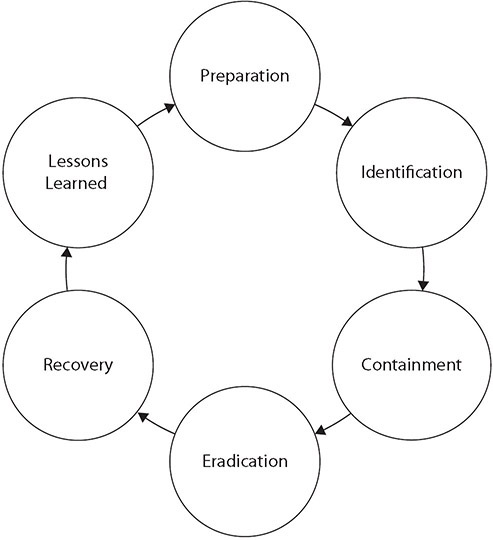
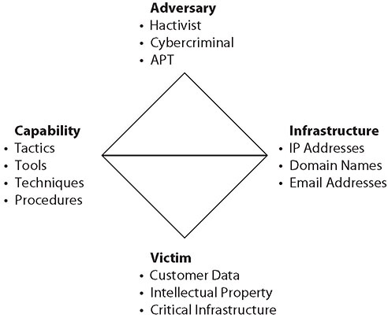

Table of Contents for
CompTIA Security+ All-in-One Exam Guide, Sixth Edition (Exam SY0-601)), 6th Edition
- Cover (01:09 mins)
- Title Page (01:09 mins)
- Copyright Page (03:27 mins)
- Dedication (01:09 mins)
- About the Authors (04:36 mins)
- Contents (19:33 mins)
- Preface (02:18 mins)
- Acknowledgments (01:09 mins)
- Introduction (12:39 mins)
-
Part I Threats, Attacks, and Vulnerabilities (01:09 mins)
- Chapter 1 Social Engineering Techniques (35:39 mins)
- Chapter 2 Type of Attack Indicators (37:57 mins)
- Chapter 3 Application Attack Indicators (33:21 mins)
- Chapter 4 Network Attack Indicators (39:06 mins)
- Chapter 5 Threat Actors, Vectors, and Intelligence Sources (44:51 mins)
- Chapter 6 Vulnerabilities (31:03 mins)
- Chapter 7 Security Assessments (23:00 mins)
- Chapter 8 Penetration Testing (25:18 mins)
-
Part II Architecture and Design (01:09 mins)
- Chapter 9 Enterprise Security Architecture (26:27 mins)
- Chapter 10 Virtualization and Cloud Security (25:18 mins)
- Chapter 11 Secure Application Development, Deployment, and Automation Concepts (27:36 mins)
- Chapter 12 Authentication and Authorization (33:21 mins)
- Chapter 13 Cybersecurity Resilience (39:06 mins)
- Chapter 14 Embedded and Specialized Systems (41:24 mins)
- Chapter 15 Physical Security Controls (49:27 mins)
- Chapter 16 Cryptographic Concepts (42:33 mins)
-
Part III Implementation (01:09 mins)
- Chapter 17 Secure Protocols (20:42 mins)
- Chapter 18 Host and Application Security (46:00 mins)
- Chapter 19 Secure Network Design (67:51 mins)
- Chapter 20 Wireless Security (25:18 mins)
- Chapter 21 Secure Mobile Solutions (43:42 mins)
- Chapter 22 Implementing Cloud Security (24:09 mins)
- Chapter 23 Identity and Account Management Controls (33:21 mins)
- Chapter 24 Implement Authentication and Authorization (37:57 mins)
- Chapter 25 Public Key Infrastructure (55:12 mins)
- Part IV Operations and Incident Response (01:09 mins)
- Part V Governance, Risk, and Compliance (01:09 mins)
- Part VI Appendixes and Glossary (01:09 mins)
- Glossary (65:33 mins)
- Index (67:51 mins)
CHAPTER 27
Incident Response Policies, Processes, and Procedures
In this chapter, you will
• Define incident response policies and plans
• Explore incident response processes and exercises
• Compare and contrast various incident response frameworks, procedures, plans, and policies
Normal operations in an IT enterprise include preparing for when things go wrong. One aspect of this is when things are not operating correctly, for reasons unknown, and the incident response (IR) process is used to determine the what, why, and where of the problem. A bigger problem is a disaster, where disaster recovery and continuity of operations are the pressing issues. Each of these situations requires preparation and readiness for the enterprise to navigate all of the complexities of these types of operations. This chapter looks at the concepts and procedures behind these specialized operations.
Certification Objective This chapter covers CompTIA Security+ exam objective 4.2: Summarize the importance of policies, processes, and procedures for incident response.
Incident Response Plans
An incident response plan describes the steps an organization performs in response to any situation determined to be abnormal in the operation of a computer system or network. The causes of incidents are many—from the environment (storms), to user error, to unauthorized actions by unauthorized users, to name a few. Although the causes may be many, the results can be classified into classes. A low-impact incident may not result in any significant risk exposure, so no action other than repairing the broken system is needed. A moderate-risk incident will require greater scrutiny and response efforts, and a high-level risk exposure incident will require the greatest scrutiny and response efforts. To manage incidents when they occur, an IT team needs to create an incident response plan that includes a table of guidelines to assist in determining the level of response.
Two major elements play a role in determining the level of response. Information criticality is the primary determinant, and this comes from the data classification and the quantity of data involved. For example, the loss of one administrator password is less serious than the loss of all of them and thus requires a lower level of response. The second factor is how the incident potentially affects the organization’s operations. A series of breaches, whether minor or not, indicates a pattern that can have public relations and regulatory issues.
The incident response plan will cover a wide range of items, which are discussed in the next several sections. Although an incident response plan may cover more items in a given enterprise, the Security+ objectives examine incident response process steps, exercises, frameworks, plans, and policies.
Incident Response Process
The incident response process is the set of actions security personnel perform in response to a wide range of triggering events. These actions are broad and varied, as they have to deal with numerous causes and consequences. Incident response activities at times are closely related to other IT activities involving IT operations. Incident response activities can be similar to disaster recovery and business continuity operations. Incident response activities are not performed in a vacuum, but rather are intimately connected to many operational procedures, and this connection is key to overall system efficiency. The six phases of the incident response process and their sequencing are shown in Figure 27-1.

Figure 27-1 Incident response process

EXAM TIP Know the six phases of the incident response process and the order in which they are performed: preparation, identification, containment, eradication, recovery, and lessons learned.
Preparation
Preparation is the phase of incident response that occurs before a specific incident. Preparation includes all the tasks needed to be organized and ready to respond to an incident. Through the use of a structured framework coupled with properly prepared processes, incident response becomes a manageable task. Without proper preparation, this task can quickly become impossible or intractably expensive. Successful handling of an incident is a direct result of proper preparation. Items done in preparation include ensuring that the correct data events are being logged, the reporting of potential incidents is happening, and people are trained with respect to the IR process and their personal responsibilities.
Identification
Identification is the process where a team member suspects that a problem is bigger than an isolated incident and notifies the incident response team for further investigation. An incident is defined as a situation that departs from normal, routine operations. Whether an incident is important or not is the first point of decision as part of an incident response process. A single failed login is technically an incident, but if it is followed by a correct login, then it is not of any consequence. In fact, this could even be considered normal. But having 10,000 failed attempts on a system, or failures across a large number of accounts, is distinctly different and may be worthy of further investigation. The act of identification involves coming to a decision that the information related to the incident is worthy of further investigation by the IR team.
Identification can be done by many on the IT team, such as the help desk, admins, database personnel—in essence, anyone who finds something out of the ordinary that may be a real problem. Some training is required to prevent false alarms; a single failed file access, for instance, or a server that resets unexpectedly are just things that happen and are probably not a cause for IR alarm. But when single incidents become multiple incidents, then an investigation may be warranted and the conditions should be identified as a possible IR issue.
A key first step is to process the information and determine whether or not to invoke incident response processes. Incident information can come from a wide range of sources, including logs, employees, help desk calls, system monitoring, security devices, and more. The challenge is to detect that something other than simple routine errors is occurring. When evidence accumulates—or, in some cases, specific items such as security device logs indicate a potential incident—the next step is to escalate the situation to the IR team.
The IR team examines the information, gathering additional information if necessary, to determine the cause of the incident. If it meets the defined thresholds of the organization, an incident will be logged and fully investigated. Whatever the root cause, if it is truly more than a random error, the next step is containment.
Containment
Once the IR team has determined that an incident has in fact occurred and requires a response, their first step is to contain the incident and prevent its spread. For example, if the incident involves a virus or worm that is attacking database servers, then protecting uninfected servers is paramount. Containment is the set of actions taken to constrain the incident to a minimal number of machines. This preserves as much of production as possible and ultimately makes handling the incident easier. This can be complex because, in many cases, containing the problem requires fully understanding it as well as its root cause and the vulnerabilities involved.
Eradication
Once the IR team has contained a problem to a set footprint, the next step is to eradicate the problem. Eradication involves removing the problem, and in today’s complex system environment, this may mean rebuilding a clean machine. A key part of operational eradication is the prevention of reinfection. Presumably, the system that existed before the problem occurred would be prone to a repeat infection, so this needs to be specifically guarded against. One of the strongest value propositions for virtual machines is the ability to rebuild quickly, making the eradication step relatively easy.
Recovery
After the issue has been eradicated, the recovery process begins. At this point, the investigation is complete and documented. Recovery is the process of returning the asset into the business function and restoring normal business operations. Eradication, the previous step, removed the problem, but in most cases the eradicated system will be isolated. The recovery process includes the steps necessary to return the system and applications to operational status. After recovery, the team moves to document the lessons learned from the incident.
Lessons Learned
A postmortem session should collect lessons learned and assign action items to correct weaknesses and to suggest ways to improve. To paraphrase a famous quote, those who fail to learn from history are destined to repeat it. The lessons learned phase serves two distinct purposes. The first is to document what went wrong and allowed the incident to occur in the first place. Failure to correct this means a sure repeat. The second is to examine the incident response process itself. Where did it go well, where did problems occur, and how can it be improved? Continuous improvement of the actual incident response process is an important task.
EXAM TIP The two main elements covered thus far overlap: incident response planning and the actual incident response process are both multistep items that can easily appear in questions on the exam. Be sure to pay attention to which element (either planning or process) is being discussed in the question as well as what aspect of that topic. In other words, first determine if the question concerns the planning process or the IR process and then pick the correct phase.
Exercises
One really doesn’t know how well a plan is crafted until it is tested. Exercises come in many forms and functions, and doing a tabletop exercise where the planning and preparation steps are tested is an important final step in the planning process. Having a process and a team assembled is not enough unless the team has practiced the process on the systems of the enterprise.
EXAM TIP If you’re given a scenario, the details of the scenario will point to the appropriate part of the planning process. Therefore, pay attention to the details for the best answer.
Tabletop
A tabletop exercise is one that is designed for the participants to walk through all the steps of a process, ensuring all elements are covered and that the plan does not forget a key dataset or person. This is typically a fairly high-level review, designed to uncover missing or poorly covered elements and gaps in communications, both between people and systems. This tabletop exercise is a critical final step because it validates the planning covered the needed elements. The steps in the exercise should be performed by the principal leaders of the business and IT functions to ensure that all steps are correct. Although this will take time from senior members, given the criticality of this business process, as it is being done for operations determined to be vital to the business, it hardly seems like overkill.
This exercise aspect is not a one-time thing; it should be repeated after major changes to systems that impact the continuity of the operations plan or other major changes such as personnel turnover. As such, major corporations regularly exercise these types of systems on a predetermined schedule, rotating through day and night shifts, primary and backup personnel, and various systems.
Walkthroughs
Walkthroughs examine the actual steps that take place associated with a process, procedure, or event. Walkthroughs are in essence a second set of eyes, where one party either explains or demonstrates the steps to perform a task while a second person observes. The observer’s job is to examine the activity for compliance with applicable policies and directives. Is the task being accomplished correctly in terms of the process? Are the proper controls, processes, and procedures being followed? Walkthroughs can be done on elements such as computer code, where the person who wrote the code shows it to others on the team and walks them through the program, line by line. Explaining how it works and showing how it is coded allows for others to examine both syntax and process flow and provide valuable feedback on the code before it is implemented in a project. Having a supervisor observe the process for any function enables an independent determination as to whether their actions are in line with corporate security policies. Because the person doing the work relies upon training and repetitive practice, a periodic walkthrough provides evidence that proper procedures are actually being followed. Walkthroughs are commonly used by audit personnel to ensure proper processes are being followed.
Simulations
A simulation is an approximation of the operation of a process or system that is designed to represent the actual system operations over a period of time. The simulation can be used in place of systems or elements that are not practical to replicate during an exercise, such as a complex element like a chemical plant or a time-consuming activity like a backup operation. Simulations are used in exercises to provide context for the participants without the expense associated with the use of a real system.
EXAM TIP The different types of exercise elements, tabletop exercises, walkthroughs, and simulations can be used together as part of an exercise package.
Attack Frameworks
Attack frameworks provide a roadmap of the types of actions and sequence of actions used when attacking a system. Frameworks bring a sense of structure and order to the multidimensional problem associated with defending a variety of systems against multiple different types of attackers with various objectives. The objective of using a framework is to improve post-compromise detection of adversaries in enterprises by providing guidance on where an adversary’s actions may be observable and where one can take specific actions. Organizations can use frameworks to identify holes in defenses and prioritize them based on the risk associated with actions an adversary is likely to take. Three different frameworks are described in the following sections: the MITRE ATT&CK framework, the Diamond Model of Intrusion Analysis, and the Cyber Kill Chain.
MITRE ATT&CK
The MITRE ATT&CK framework is a comprehensive matrix of attack elements, including the tactics and techniques used by attackers on a system. This framework can be used by threat hunters, red teamers, and defenders to better classify attacks and understand the sequential steps an adversary will be taking when attacking a system. This framework enables personnel to plan and defend, even during an attack, and further it acts as a useful tool in assessing an organization’s risk.
The MITRE ATT&CK framework has a fairly simple design, with the top row of the matrix covering activities such as initial access, execution, persistence, privilege escalation, defense evasion, credential access, discovery, lateral movement, collection, command and control, exfiltration, and impact. Under each of these activities is a series of techniques and sub-techniques. Taken together, this matrix paints a comprehensive picture of paths through an organization’s IT enterprise.
EXAM TIP The MITRE ATT&CK framework is a knowledgebase of various real-world observations and attack techniques. It is often used by organizations for threat modeling.
The Diamond Model of Intrusion Analysis
The Diamond Model of Intrusion Analysis is a cognitive model used by the threat intelligence community to describe a specific event. It is based on the notion that an event has four characteristics, each comprising a corner of the diamond, as shown in Figure 27-2. Taken together, these elements describe an event. The four nodes that make up an event are adversary, infrastructure, capability, and victim. The adversary node is a description of the attacker and their data, including anything you know about them (e-mails, names, locations, handles, and so on). The infrastructure node is a description of what is being used in the attack, such as IP addresses, domain names, e-mail addresses, and so on. The victim node is the target, and the capability node is a description of what is being used (malware, stolen certificates/credentials, tools, exploits, and so on). As an example, a completed diamond could take the following form:

Figure 27-2 Diamond Model of Intrusion Analysis
1. Adversary Whois is used to get an e-mail for the registrant—the possible attacker.
2. Infrastructure The C2 domain name resolves to an IP address.
3. Capability The response teams finds the C2 server domain name.
4. Victim A victim discovers malware and launches an incident response.
EXAM TIP The Diamond Model enables intrusion analysis by placing malicious activity at four points of the diamond: adversary, infrastructure, capability, and victim.
Cyber Kill Chain
The Cyber Kill Chain is a model developed by Lockheed Martin as a military form of engagement framework. This model has a series of distinct steps that an attacker uses during a cyberattack—from the early reconnaissance stages to the exfiltration of data. The use of the Cyber Kill Chain helps us understand and combat different forms of attack—from ransomware, to security breaches, and even advanced persistent threats (APTs).
The Cyber Kill Chain has slightly different steps depending on whose version you use, but the most common implementations include the following ones:
1. Reconnaissance Research and identify targets.
2. Weaponization Exploit vulnerabilities to enter.
3. Delivery Deliver the payload (evil content).
4. Exploitation Begin the payload attack on the system and gain entry.
5. Installation Implement backdoors, persistent access, bots, and so on.
6. Command and Control Communicate to outside servers for control purposes.
7. Action on Objective Obtain the objective of the attack (for example, steal intellectual property).
By understanding the progression of an attack, defenders can choose their point of defense, which enables them to react to an attack with a plan and a purpose.
EXAM TIP Developed by Lockheed Martin, the Cyber Kill Chain is a framework used to defend against the chain of events an attacker takes, from the beginning of an attack to the end of an attack.
Stakeholder Management
Stakeholders are the parties that have an interest in a process or the outcome of a process. Stakeholders can be internal or external to an organization. With respect to incident response scenarios, all levels of management and many different business functions can be involved internally, including corporate legal, communications, liaisons with regulators, customer support elements, and the operations personnel. Externally, there can be issues that involve vendors and customers, and there may be reporting requirements to regulators and other outside groups. With this wide range of involved parties, having a structure to manage communication with the various stakeholders is important to keep them properly informed and to separate the communication tasks from the operational tasks associated with responding to the incident. Having a stakeholder management process, including defined personnel roles and responsibilities, is essential for the management of the stakeholders and their relationships during incidents.
Communication Plan
Planning the desired reporting requirements, including escalation steps, is an important part of the operational plan for an incident. Who will talk for the incident response team and to whom, and what will they say? How does the information flow? Who needs to be involved? When does the issue escalate to higher levels of management? These are all questions best handled in the calm of a pre-incident planning meeting, where the procedures are crafted, rather than on the fly as an incident is occurring. A communication plan as part of the incident response effort that answers the preceding questions and defines responsibilities for communication is a key element to be developed during the preparation phase.
Reporting requirements can refer to industry, regulatory, and statutory requirements in addition to internal communications. Understanding the reporting requirements to external entities is part of the responsibility of the communications lead on the team. Having the correct information in the hands of the correct people at the correct time is an essential part of reporting, and a prime responsibility of the communications lead on the team.
Disaster Recovery Plan
No matter what event you are worried about—whether natural or person-made and whether targeted at your organization or more random—you can make preparations to lessen the impact on your organization and the length of time your organization will be out of operation. A disaster recovery plan (DRP) is critical for effective disaster recovery efforts. A DRP defines the data and resources necessary and the steps required to restore critical organizational processes.
Consider what your organization needs to perform its mission. This information provides the beginning of a DRP since it tells you what needs to be quickly restored. When considering resources, don’t forget to include both the physical resources (such as computer hardware and software) and the personnel (the people who know how to run the systems that process your critical data).
To begin creating your DRP, first identify all critical functions for your organization and then answer the following questions for each of these critical functions:
• Who is responsible for the operation of this function?
• What do these individuals need to perform the function?
• When should this function be accomplished relative to other functions?
• Where will this function be performed?
• How is this function performed (what is the process)?
• Why is this function so important or critical to the organization?
By answering these questions, you can create an initial draft of your organization’s DRP. The name often used to describe the document created by addressing these questions is business impact assessment (BIA). Both the disaster recovery plan and the business impact assessment, of course, will need to be approved by management, and it is essential that they buy into the plan—otherwise your efforts will more than likely fail. The old adage “those who fail to plan, plan to fail” certainly applies in this situation.
A good DRP must include the processes and procedures needed in order for your organization to functioning properly and to ensure continued operation. What specific steps will be required to restore operations? These processes should be documented and, where possible and feasible, reviewed and exercised on a periodic basis. Having a plan with step-by-step procedures that nobody knows how to follow does nothing to ensure the continued operation of the organization. Exercising your DRP and processes before a disaster occurs provides you with the opportunity to discover flaws or weaknesses in the plan when there is still time to modify and correct them. It also provides an opportunity for key figures in the plan to practice what they will be expected to accomplish.

NOTE It is often informative to determine what category your various business functions fall into. You may find that certain functions currently being conducted are not essential to your operations and could be eliminated. In this way, preparing for a security event may actually help you streamline your operational processes.
Business Continuity Plan
As in most operational issues, planning is a foundational element to success. This is true in business continuity, and the business continuity plan (BCP) represents the planning and advanced policy decisions to ensure the business continuity objectives are achieved during a time of obvious turmoil. You might wonder what the difference is between a disaster recovery plan and a business continuity plan. After all, isn’t the purpose of disaster recovery the continued operation of the organization or business during a period of disruption? Many times, these two terms are used synonymously, and for many organizations there may be no major difference between them. There are, however, real differences between a BCP and a DRP, one of which is the focus.
The focus of a BCP is the continued operation of the essential elements of the business or organization. Business continuity is not about operations as normal but rather about trimmed-down, essential operations only. In a BCP, you will see a more significant emphasis placed on the limited number of critical systems the organization needs to operate. The BCP will describe the functions that are most critical, based on a previously conducted business impact analysis, and will describe the order in which functions should be returned to operation. The BCP describes what is needed in order for the business to continue to operate in the short term, even if all requirements are not met and risk profiles are changed.
The focus of a DRP is on recovering and rebuilding the organization after a disaster has occurred. The recovery’s goal is the complete operation of all elements of the business. The DRP is part of the larger picture, while the BCP is a tactical necessity until operations can be restored. A major focus of the DRP is the protection of human life, meaning evacuation plans and system shutdown procedures should be addressed. In fact, the safety of employees should be a theme throughout a DRP.
EXAM TIP Although the terms DRP and BCP may be used synonymously in small firms, in large firms, there is a difference in focus between the two plans. The focus of the BCP is on continued operation of a business, albeit at a reduced level or through different means during some period of time. The DRP is focused specifically on recovering from a disaster. In many cases, both of these functions happen at the same time, and hence they are frequently combined in small firms and in many discussions. The DRP is part of the larger BCP process.
Continuity of Operation Planning (COOP)
Ensuring continuity of operations is a business imperative, as it has been shown that businesses that cannot quickly recover from a disruption have a real chance of never recovering and going out of business. The overall goal of continuity of operation planning (COOP) is to determine which subset of normal operations needs to be continued during periods of disruption. Continuity of operations planning involves developing a comprehensive plan to enact during a situation where normal operations are interrupted. This includes identifying critical assets (including key personnel), critical systems, and interdependencies as well as ensuring their availability during a disruption.
Developing a continuity of operations plan is a joint effort between the business and the IT team. The business understands which functions are critical for continuity of operations, and which functions can be suspended. The IT team understands how this translates into equipment, data, and services and can establish the correct IT functions. Senior management will have to make the major decisions concerning balancing risk versus cost versus criticality when examining hot, warm, or cold site strategies.
EXAM TIP The COOP is focused on continuing business operation, whereas the BCP is focused on returning a business to functioning profitably, even if at a reduced level or capacity. Government agencies, where service is essential and costs can be dealt with later, focus on COOP, while many businesses have to focus on DRP and BCP.
Incident Response Team
The cyber incident response team (CIRT) is composed of the personnel who are designated to respond to an incident. The incident response plan should identify the membership and backup members, prior to an incident occurring. Once an incidence response begins, trying to find personnel to perform tasks only slows down the function, and in many cases would make it unmanageable. Whether a dedicated team or a group of situational volunteers, the planning aspect of incident response needs to address the topic of who is on the team and what their duties are.
Management needs to appoint the team members and ensure that they have time to be prepared for service. The team leader is typically a member of management who fully understands both the enterprise IT environment and IR process because their job is to lead the team with respect to the process. Subject matter experts (SMEs) on the various systems that are involved provide the actual working portion of the team, often in concert with operational IT personnel for each system. The team is responsible for all phases of the incident response process, which was covered previously in the chapter.
A critical step in the incident response planning process is to define the roles and responsibilities of the incident response team members. These roles and responsibilities may vary slightly based on the identified categories of incident, but defining them before an incident occurs empowers the team to perform the necessary tasks during the time-sensitive aspects of an incident. Permissions to cut connections, change servers, and start/stop services are common examples of actions that are best defined in advance to prevent time-consuming approvals during an actual incident.
There are several specific roles that are unique to all IR teams: the team leader, the team communicator, and an appropriate bevy of SMEs. The team leader manages the overall IR process, so they need to be a member of management so they can navigate the corporate chain of command. The team communicator is the spokesperson for the team to all other groups, inside and outside the company. IR team members are typically SMEs, and their time is valuable and should be spent on task. The team communicator shields these members from the time-consuming press interview portion as much as possible.
Retention Policies
Data retention is the storage of data records. One of the first steps in understanding data retention in an organization is the determination of what records require storage and for how long. Among the many reasons for retaining data, some of the most common are for the purposes of billing and accounting, contractual obligation, warranty history, and compliance with local, state, and national government regulations, such as IRS rules. Maintaining data stores for longer than is required is a source of risk, as is not storing the information long enough. Some information is subject to regulations requiring lengthy data retention, such as PHI for workers who have been exposed to specific hazards. Some data elements, such as the card verification code (CVC/CV2) element in a credit card transaction, are never stored as part of a transaction record. They are used for approval and destroyed to prevent loss after the transaction is concluded.
Failure to maintain the data in a secure state can also be a retention issue, as is not retaining it. In some cases, destruction of data, specifically data subject to legal hold in a legal matter, can result in adverse court findings and sanctions. Even if the data destruction is unintentional or inadvertent, it is still subject to sanction, as the firm had a responsibility to protect it. Legal hold can add significant complexity to data retention efforts, as it forces guaranteed separate storage of the data until the legal issues are resolved. Once data is on the legal hold track, its retention clock does not expire until the hold is lifted. This makes identifying, labeling, and maintaining the data subject to a legal hold an added dimension to normal storage considerations.
EXAM TIP Data retention policies differ by organization. However, some information such as PHI may be subject to regulations requiring specific data retention rules.
Chapter Review
In this chapter, you first became acquainted with incident response plans and processes. Under incident response processes, the model for preparation, identification, containment, eradication, recovery, and lessons learned was presented. The next major topic was exercises. In this portion of the discussion, the different types of exercises (tabletop, walkthroughs, and simulations) were presented.
The next major section looked at attack frameworks. The MITRE ATT&CK framework was presented, followed by the Diamond Model of Intrusion Analysis and the Cyber Kill Chain model. Stakeholder management was covered as well as plans for communication during an incident.
The chapter wrapped up with an examination of disaster recovery plans, business continuity plans, and continuity of operations plans. The composition of the incident response team was covered, and the retention policies associated with incident response data were presented.
Questions
To help you prepare further for the CompTIA Security+ exam, and to test your level of preparedness, answer the following questions and then check your answers against the correct answers at the end of the chapter.
1. Which phase of the incident response process occurs before an actual incident?
A. Preparation
B. Identification
C. Containment
D. Prevention
2. Which phase of the incident response process involves removing the problem?
A. Identification
B. Eradication
C. Recovery
D. Mitigation
3. What is the term used to describe the steps an organization performs after any situation determined to be abnormal in the operation of a computer system?
A. Computer/network penetration incident plan
B. Incident response plan
C. Backup restoration and reconfiguration
D. Cyber event response
4. What is the term for the set of steps needed to develop a comprehensive plan to enact during a situation where normal operations are interrupted?
A. Disaster recovery
B. Continuity of operations planning
C. Incident response planning
D. Restoration of business functions planning
5. In which phase of the incident response process are actions taken to constrain the incident to the minimal number of machines?
A. Eradication
B. Identification
C. Containment
D. Recovery
6. Which of the following is not part of the Diamond Model of Intrusion Analysis?
A. Victim
B. Infrastructure
C. Adversary
D. Vulnerability
7. For organizations that draw a distinction between a BCP and a DRP, which of the following statements is true?
A. The BCP details the functions that are most critical and outlines the order in which critical functions should be returned to service to maintain business operations.
B. The BCP is a subset of the DRP.
C. The DRP outlines the minimum set of business functions required for the organization to continue functioning.
D. The DRP is always developed first, and the BCP normally is an attachment to this document.
8. Which of the following are part of the Cyber Kill Chain? (Choose all that apply.)
A. Reconnaissance
B. Weaponization
C. Anti-forensics
D. Installation
9. Two major elements play a role in determining the level of response to an incident. Information criticality is the primary determinant. What is the other?
A. Information sensitivity or the classification of the data
B. The value of any data lost in the incident
C. How the incident potentially affects the organization’s operations
D. Whether the organization wishes to pursue a legal settlement against the attacker(s)
10. What is the best way to deal with large, complex systems that have very expensive and lengthy process elements in an exercise?
A. Tabletops
B. Walkthroughs
C. Simulations
D. Just skip this element.
Answers
1. A. Preparation is the phase of incident response that occurs before a specific incident. Preparation includes all the tasks needed to be organized and ready to respond to an incident. The act of identification is coming to a decision that the information related to the incident is worthy of further investigation by the IR team. Containment is the set of actions taken to constrain the incident to the minimal number of machines. Prevention is not a phase of the incident response process.
2. B. Eradication involves removing the problem, and in today’s complex system environment, this may mean rebuilding a clean machine. The act of identification is coming to a decision that the information related to the incident is worthy of further investigation by the IR team. The recovery process includes the steps necessary to return the systems and applications to operational status. Mitigation is not a phase in the incident response process.
3. B. Incident response plan is the term used to describe the steps an organization performs in response to any situation determined to be abnormal in the operation of a computer system.
4. B. Continuity of operations planning is the set of steps needed to develop a comprehensive plan to enact during a situation where normal operations are interrupted. Disaster recovery is the process that an organization uses to recover from events that disrupt normal operations. An incident response plan describes the steps an organization performs in response to any situation determined to be abnormal in the operation of a computer system. Restoration of business functions planning is not a standard term used in recovery planning.
5. C. Containment is the set of actions taken to constrain the incident to the minimal number of machines. Eradication involves removing the problem, and in today’s complex system environment, this may mean rebuilding a clean machine. The act of identification is coming to a decision that the information related to the incident is worthy of further investigation by the IR team. The recovery process includes the steps necessary to return the systems and applications to operational status.
6. D. Vulnerability is not a formal node of the Diamond Model for Intrusion Analysis. The fourth node is capability.
7. A. Many organizations, particularly smaller ones, treat the two terms BCP and DRP synonymously, but for organizations that don’t, the BCP outlines the business functions necessary for continued operation and may describe the order in which functions will be restored. The DRP outlines all processes and how they can be restored; the BCP acts as a companion document that describes which functions need to be restored and in which order.
8. A, B, and D. Reconnaissance, weaponization, and installation are steps in the Cyber Kill Chain. Anti-forensics is not; although these actions may occur, they are embedded in other steps.
9. C. The second factor involves a business decision on how an incident plays into current business operations. A series of breaches, whether minor or not, indicates a pattern that can have public relations and regulatory issues.
10. C. Simulation is a valuable tool to imitate parts of a process that can’t be included in an exercise because of cost, time, resources, or other constraints.